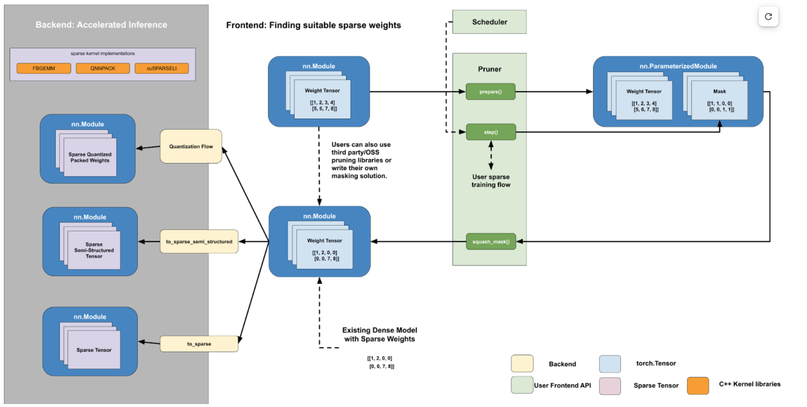
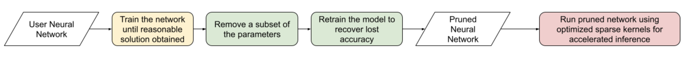

Sparsity Overview¶
Sparsity is the technique of removing parameters from a neural network in order to reduce its memory overhead or latency. By carefully choosing how the elements are pruned, one can achieve significant reduction in memory overhead and latency, while paying a reasonably low or no price in terms of model quality (accuracy / f1).
Goal¶
We feel that the main problem current sparsity researchers / users face is fragmentation. Researchers rightfully aim to show end-to-end results, but this means a lot of time is spent figuring out how to integrate with PyTorch and implementation questions like:
When should I mask?
When/how should I store the compressed representation?
Do I want in-place or out-of-place mask updates?
How can I call sparse matmul instead of dense?
We feel like the above problems can be solved once by torchao, letting researchers focus on what really matters - pushing sparse kernel performance or more accurate pruning algorithms.
More concretely, we hope to provide tutorials and APIs for both sparse kernels (tensor subclassing) and pruning algorithms (torch.ao.pruning.Sparsifier) that users can extend. We aim to provide modular building blocks, that can be used to accelerate not only inference but training as well, and that compose nicely with torchao quantization workflows.
Train sparse models from scratch with hardware acceleration, with minimal accuracy loss.
Recover accuracy loss of pruned model with custom pruning algorthim.
Accelerate masked/pruned models on sparsity-supported hardware to realize performance improvements.
Design¶
Sparsity, like quantization, is an accuracy/performance trade-off, where we care not only about the speedup but also on the accuracy degradation of our architecture optimization technique.
In quantization, the theoretical performance gain is generally determined by the data type that we are quantizing to - quantizing from float32 to float16 yields a theoretical 2x speedup. For pruning/sparsity, the analogous variable would be the sparsity level/ sparsity pattern. For semi-structured, the sparsity level is fixed at 50%, so we expect a theoretical 2x improvement. For block-sparse matrices and unstructured sparsity, the speedup is variable and depends on the sparsity level of the tensor.
One key difference between sparsity and quantization is in how the accuracy degradation is determined: In general, the accuracy degradation of quantization is determined by the scale and zero_point chosen. However, in pruning the accuracy degradation is determined by the mask. Sparsity and quantization are closely related and share accuracy mitigation techniques like quantization/sparsity aware training.
By carefully choosing the specified elements and retraining the network, pruning can achieve negligible accuracy degradation and in some cases even provide a slight accuracy gain. This is an active area of research with no agreed-upon consensus. We expect users will have a target sparsity pattern and mind and to prune to that pattern.
Given a target sparsity pattern, pruning/sparsifying a model can then be thought of as two separate subproblems:
Accuracy - How can I find a set of sparse weights which satisfy my target sparsity pattern that minimize the accuracy degradation of my model?
Performance - How can I accelerate my sparse weights for inference and reduce memory overhead?
Our workflow is designed to consist of two parts that answer each question independently:
a frontend python user-facing API to find sparse weights for any arbitrary sparsity pattern.
a backend collection of sparse kernels / ops to reduce memory/latency.
The handoff point between these two pieces are sparse weights stored in a dense format, with 0 in the place of missing elements. This is a natural handoff point because sparse matrix multiplication and dense matrix multiplication with this tensor will be numerically equivalent. This lets us present a clear contract to the user for our backend, for a given sparsity pattern:
If you can get your dense matrix into a 2:4 sparse format, we can speed up matrix multiplication up to 1.7x with no numerical loss.
This also allows users with existing sparse weights in a dense format to take advantage of our fast sparse kernels. We anticipate many users to come up with their own custom frontend masking solution or to use another third party solution, as this is an active area of research.
Below, we provide an example of accelerating a model with 2:4 sparsity + bf16 using our PyTorch APIs.
import torch
from torch.sparse import to_sparse_semi_structured, SparseSemiStructuredTensor
from torch.ao.pruning import WeightNormSparsifier
# bfloat16 CUDA model
model = model.half().cuda()
# Accuracy: Finding a sparse subnetwork
sparse_config = []
for name, mod in model.named_modules():
if isinstance(mod, torch.nn.Linear):
sparse_config.append({"tensor_fqn": f"{name}.weight"})
sparsifier = WeightNormSparsifier(sparsity_level=1.0,
sparse_block_shape=(1,4),
zeros_per_block=2)
# attach FakeSparsity
sparsifier.prepare(model, sparse_config)
sparsifier.step()
sparsifier.squash_mask()
# now we have dense model with sparse weights
# Performance: Accelerated sparse inference
for name, mod in model.named_modules():
if isinstance(mod, torch.nn.Linear):
mod.weight = torch.nn.Parameter(to_sparse_semi_structured(mod.weight))
Fundamentally, the flow works by manipulating torch.Tensors. In the frontend, we specify the tensors by their fully-qualified-name in a sparse_config dictionary. The frontend is designed to follow the quantization API, with a prepare function, which attaches FakeSparsity paramerizations to the tensors specified in the config.
FakeSparsity is a parameterization which simulates unstructured sparsity, where each element has a mask. Because of this, we can use it to simulate any sparsity pattern we want.
The user will then train the prepared model using their own custom code, calling .step() to update the mask if necessary. Once they’ve found a suitable mask, they call squash_mask() to fuse the mask into the weights, creating a dense tensor with 0s in the right spot.
Users will then convert their model for accelerated sparse inference by either using the quantization flow for quantized block sparse CPU inference or by calling to_sparse_semi_structured on the specified weight tensors.
Context¶
This section provides some context on neural network pruning/sparsity as well as definitions for some common pruning/sparsity terms. In academia / industry, pruning and sparsity are often used interchangeably to refer to the same thing. This can be confusing, especially since sparsity is an overloaded term that can refer to many other things, such as sparse tensor representations.
Note that this section focuses on pruning, instead of sparse training. The distinction being that in pruning we start with a pretrained dense model, while during sparse training we train a sparse model from scratch.
In order to avoid confusion, we generally try to use sparsity to refer to tensors. Note that a sparse tensor can refer to a dense tensor with many zero values, or a tensor stored using a sparse representation. We describe the flow as pruning and the resultant model as a pruned model.
Roughly, the flow for achieving a more performant pruned model looks like this:
The general idea behind pruning is that we can mask out some of the weights of a trained neural network and recover any accuracy loss. The resultant pruned model can be run on optimized kernels that take advantage of this sparsity for accelerated inference.
Zeroing out pruned parameters doesn’t affect the latency / memory overhead of the model out of the box. This is because the dense tensor itself still contains the pruned elements (the 0 elements) and will still compute using those elements during a matrix multiply. In order to realize performance gains, we need to swap out our dense kernels for sparse kernels.
Loosely speaking, these sparse representations allow us to skip calculations involving pruned elements in order to speed up matrix multiplication. To do this, these optimized sparse kernels work on sparse matrices that are stored in a more efficient format. Some sparse tensor layouts are tightly coupled to specific backends, like NVIDIA 2:4, while others are more general and are supported by more than one backend (CSC is supported by FBGEMM and QNNPACK).
| Name | Description | How the sparse matrix is stored |
| COO (sparse_coo) | COOrdinate format to store sparse matrices. The matrices are stored as a combination of the non-sparse data vector and the index locations of those elements in the dense matrix. | sparse matrix = {Index: Tensor of coordinate locations, Data: Tensor of values corresponding to index locations } |
| BSR (sparse_bsr) | Block sparse row format to store sparse matrices. The matrices are stored as data blocks and the index locations of those blocks in the dense matrix. Very similar to COO, except that individual data consists of blocks, not scalars. | sparse matrix = {Index: Tensor of coordinate locations, two dimensional for a matrix, Data: Tensor of blocks corresponding to index locations } where a block is a matrix corresponding to the sparsity pattern. |
| CSR (sparse_csr) / CSC (sparse_csc) | Compressed sparse row /column format to store sparse matrices. The sparse matrices are stored as data blocks on columns / rows and indices of those rows/columns in a dense matrix. This is the most compact format for storing block sparse matrices. | sparse_matrix = {Index: 1D tensor of column indices, IndexPtr: 1D tensor specifying the start and end indices of columns for rows, starting from row 0, Data: Tensor of blocks corresponding to Index locations.} |
| NVIDIA 2:4 compressed representation | Custom NVIDIA compressed storage format for 2:4 semi-structured sparsity. We store the sparse matrix as a compressed dense matrix (½ the size) containing the non-pruned elements and a bitmask index. When multiplying our sparse matrix by another dense matrix, we use the mask to index into the dense matrix and multiply with our compressed dense matrix. | sparse_matrix = {Bitmask: 2bit indices of pruned elements Compressed dense matrix: contains all unpruned elements, half the size of original dense matrix} |
Table 4.1: Overview of common sparse tensor layouts.
While the general idea of pruning is quite simple, there are many details that a user must figure out before they can successfully prune a model.
These can be loosely broken down as follows:
Pruning Configuration - What layers should I prune? What sparsity level should I prune to?
Pruning Criteria - How should I decide which parameters to remove?
Pruning Strategy - Once I have removed parameters, how can I recover any accuracy degradation?
Sparsity Pattern - Should I try to use a specific sparsity pattern when I prune my model? Different hardware backends support accelerated inference for different sparsity patterns.
Pruning Configuration¶
Not all layers in a neural network are created equal. Some layers can be more sensitive to pruning than others. The user must decide what layers to prune and also the sparsity level for each layer, which is the % of 0s for that weight tensor. The pruning configuration has an effect on both the accuracy and speedup of the pruned model.
Determining the best pruning configuration and sparsity level for a given model is an open problem and a general solution does not exist. This is in part because the optimal pruning configuration is dependent on the subsequent pruning criteria and strategy, and there are an infinite number of ways to decide how to prune models and how to recover lost accuracy.
One common method to determine which layers to prune and to what degree is to perform sensitivity analysis by pruning each layer in the model at different sparsity levels and seeing the subsequent accuracy drop (without retraining). This gives a user a sparsity-accuracy curve for each layer that the user can then use as a proxy to determine the best pruning configuration.
Pruning Criteria¶
A user must decide on a criteria for removing parameters from a neural network. Much like determining the best pruning configuration, determining the best pruning criteria is an open research question and is dependent on the other aforementioned factors.
The most common pruning criteria is to use weight magnitude. The idea is that low-magnitude weights contribute less than high-magnitude weights to the model output. If we want to remove parameters, we can remove the weights that have the smallest absolute value.
However, even with a simple pruning criteria such as weight magnitude, there are additional factors that a user would have to consider:
Local vs global scope
Local scope implies that the sparsity mask is only computed with respect to the layer statistics.
Pros: Simple mask computing
Cons: Potentially sub-optimal accuracy vs sparsity tradeoff.
Global scope means that the sparsity statistics are not bounded by a single layer, but can span over multiple layers if needed.
Pros: No need for per-layer thresholds. The tensor statistics is shared across layers, and normalization is used across layers to allow for it.
Cons: Increased complexity when computing the masks.
Tensors used for mask calculation
Weights: Just use the weight tensor in order to calculate the mask. This method is the simplest for inference as the weight tensors are constant.
Gradients: Compute importance based on both weights and gradient norms. Common for pre-training based methods. Currently CTR_mobile_feed uses a gradient-based pruning algorithm.
Activations: In some research papers, the norm of the activations that are applied with the weight of interest are used to compute the importance score.
In place or out of place mask updates
In-place updates the sparse tensor by performing W = W (Mask). Once the weight tenosr is udpated, the sparse values are zeroed out and cannot be recovered.
Pros: Requires only one copy of the sparse tensor to be stored (+ mask)
Cons: Once a mask is applied to a weight, it is zeroed out, all past history is lost. These weights cannot regrow.
Out-of-place updates don’t modify the tensor directly, but perform the following: W’ = W (Mask) and dW’= dW (Mask)
Pros: The original tensor is preserved (the masked elements are not updated via backprop). Weights can regrow if the mask changes. This is necessary for PAT.
Cons: In addition to the unmasked weights (W), the masked weights (W’) are computed and resident in memory for forward/backward computations.
| Name | Description | Notes |
| Magnitude / Saliency | Remove parameters that have the lowest norm (L1 is commonly used) | Shown to work well with 2:4 semi-structured sparsity. Able to achieve identical accuracy as the original model by repeating the training loop after one-shot magnitude pruning. |
| Movement Pruning | These methods aim to use gradient information in order to decide what parameters to remove. The idea is to remove parameters that do not change much during fine-tuning. | Common for pretrained models. |
| Low-rank factorization | These methods aim to replace Wx with SQx, where S and Q are matrices with lower rank. | Usually these methods use some sort of layer-wise reconstruction, where instead of training the model to recover lost accuracy, they seek to match layer-wise statistics (Find SQx such that L2(SQx, Wx) is minimized). |
| Random | Remove parameters randomly |
Table 4.2: Description of some common pruning criteria.
Pruning Strategy¶
This is a general term that describes the method in which a user tries to recover any accuracy degradation from their pruned model. After pruning a model, it is common to see accuracy degradation of the model, so users usually retrain the pruned model in order to remediate this. The pruning strategy also determines when and how often the model is pruned during model training.
The line between a pruning strategy and a pruning criteria is not well defined, especially in the case of pruning aware training methods, which update the mask during training. We sometimes use the term pruning algorithm to refer to the combination of these two items. These two factors, along with the pruning configuration ultimately control the final accuracy of the pruned model.
| Pruning Strategy | Description | Notes |
| Zero-shot | Prune once, don’t retrain the model | These methods rely on more complicated pruning criteria.
This is sometimes referred to as one-shot in literature, but we will use one-shot to refer to pruning once and retraining once. |
| One-shot | Prune once, retrain the model once | NVIDIA has shown that one-shot 2:4 semi-structured sparsity pruning generalizes well across a range of common vision / nlp models. \ \ The retraining strategy is to simply repeat the training process again. |
| Iterative | Prune the model, retrain, repeat | We can iteratively increase the sparsity level, or iteratively prune different layers in the model. |
| Pruning Aware Training | Mask is learned during training | Used by CTR_feed for their current pruning algorithm. |
| NAS / Multimask | Multiple masks are used during training. This can be thought of a form of neural architecture search. | Used by PySpeech (FastNAS) |
| Layer-wise reconstruction | Instead of retraining using a loss function, we try to recover as much information as possible from each layer by using a two model approach similar to knowledge distillation. | See https://arxiv.org/pdf/2204.09656.pdf |
Table 4.3: Description of some common pruning strategies.
Sparsity Pattern¶
A sparsity pattern describes how the pruned parameters are arranged within the model / tensor.
Recall that in general it is necessary to use optimized sparse kernels in order to achieve performance gains. Depending on the format and the sparsity level of the weight tensor, sparse matrix multiplication can be faster than its dense counterpart. It can also be slower if a tensor is not sufficiently sparse.
At the most general level, pruning is unstructured -every parameter has it’s own mask. This gives the most flexibility but requires very high sparsity (>98%) in order to provide performance benefits. In order to provide accelerated inference at lower sparsity levels, hardware backends have added support for special sparsity patterns.
We seek to prune the model so that the weight tensors exhibit the same sparsity pattern as our inference backend. If we are able to recover the accuracy lost while maintaining the sparsity pattern, we can run this model on sparse hardware for accelerated inference without an accuracy penalty. We can also run a model pruned to a different sparsity pattern on our target backend, at the expense of some additional accuracy loss.
The specific backend hardware and its corresponding sparsity pattern, as well as the pruning configuration ultimately dictates the performance speedups that we observe. If we prune a model using a different pruning criteria it will have the same performance characteristics if it follows the same sparsity pattern and sparsity level. For example, if we decided to remove the highest-magnitude weights instead of the lowest-magnitude weights, we wouldn’t expect that to change the performance characteristics of the pruned model.
| Sparsity Pattern | Mask Visualization
(50% sparsity level) |
||||||||||||||||||||||||||||||||
| Unstructured Sparsity |
|
||||||||||||||||||||||||||||||||
| 2:4 Semi-Structured |
|
||||||||||||||||||||||||||||||||
| Block Sparsity |
|
||||||||||||||||||||||||||||||||
| Structured Sparsity |
|
Table 4.4: Description of some common sparsity patterns.
For more information on our supported APIs and benchmaks please refer Sparsity README.